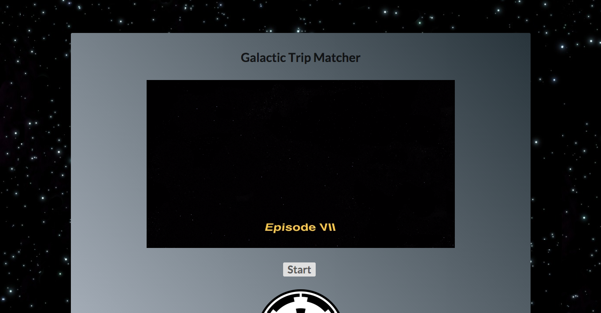
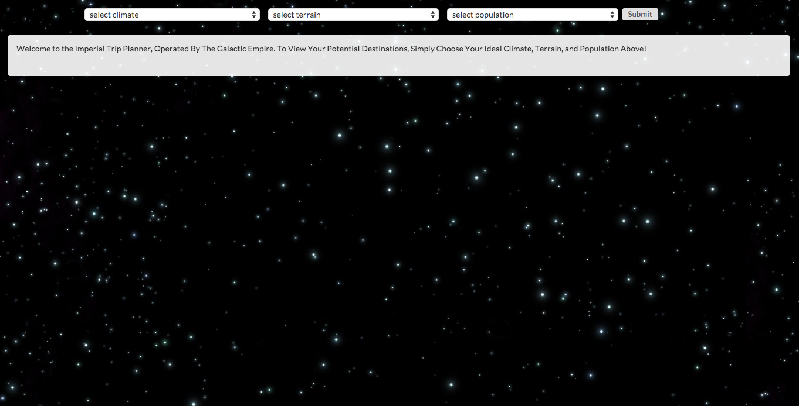

Star Wars Travel App
Project Description
Single page application built with Ember and EmberCLI, utilizing a Rails backend. Fun app that enables users to select their ideal climate, terrain, and population size. The app will then present them with a list of planets from the Star Wars canonical universe that best match their selections. Users can view detailed information about each of the planets presented, including their actual population, climate, and terrain, as well as an image of the planet and other important planetary attributes.
-
Links
-
Year
2015
-
Project Stack
Ember, Rails, Star Wars API

